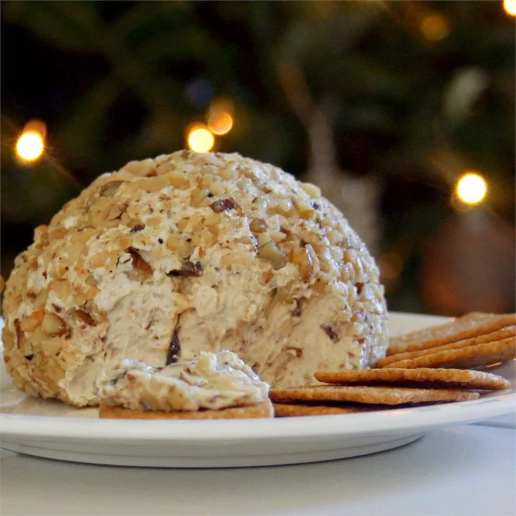

Home
Cheese Balls

Description
Cheese puffs, cheese curls, cheese balls, cheese ball puffs, cheesy puffs, or corn curls are a puffed corn snack, coated with a mixture of cheese or cheese-flavored powders. They are manufactured by extruding heated corn dough through a die that forms the particular shape. They may be ball-shaped, curly ("cheese curls"), straight, or irregularly shaped. Puffcorn is a similar food, without cheese flavoring.
Ingredients
- Cream Cheese
- Sweet Onion
- Smoked Potato
- Green Olives
- Sugar
- Worcestershire Sauce
- Walnuts
Steps
- Combine cream cheese, onion, potato, olives, and Worcestershire sauce in a bowl until evenly blended. Form mixture into a semi-ball shape in the bowl. Cover bowl with plastic wrap; refrigerate until firm, at least 2 hours.
- Place a large sheet of waxed paper on a flat surface; sprinkle with walnuts. Roll cheese ball in walnuts until completely covered; transfer to a serving plate or rewrap with waxed paper and refrigerate until ready to serve.